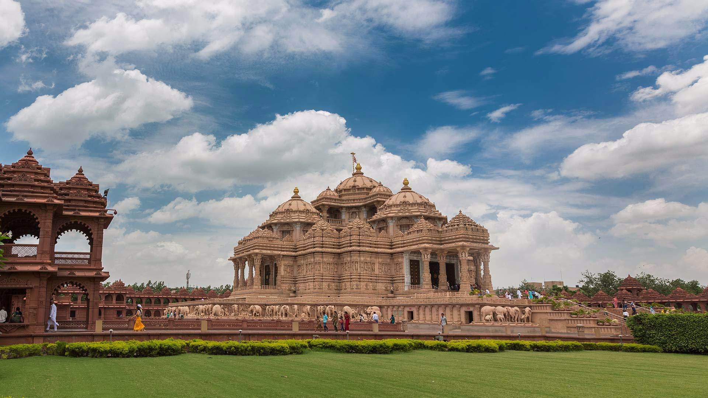

Akshardham Temple


Akshardham Temple
Swaminarayan Akshardham is a Hindu temple and spiritual-cultural campus in Delhi, India. The temple is close to the border with Noida. Also referred to as Akshardham Temple or Akshardham Delhi, the complex displays millennia of traditional and modern Hindu culture, spirituality, and architecture. Inspired by Yogiji Maharaj and created by Pramukh Swami Maharaj, it was constructed by BAPS.
It is the world's second-largest BAPS Hindu temple, following Akshardham, New Jersey, in the United States.
The temple was officially opened on 6 November 2005 by Pramukh Swami Maharaj in the presence of A. P. J. Abdul Kalam, Manmohan Singh, L.K Advani and B.L Joshi.[3][4] The temple, at the centre of the complex, was built according to the Vastu shastra and Pancharatra shastra.
In Swaminarayan Akshardham, similar to its predecessor Swaminarayan Akshardham in Gandhinagar, Gujarat, the main shrine is the focal point and maintains the central position of the entire complex. There are various exhibition halls which provide information about the life and work of Swaminarayan.
The designers of the complex have adopted contemporary modes of communication and technology to create the various exhibition halls.
The complex features an abhishek mandap, Sahaj Anand water show, a thematic garden, and three exhibitions namely Sahajanand Darshan (Hall of Values), Neelkanth Darshan (an IMAX film on the early life of Swaminarayan as the teenage yogi, Nilkanth), and Sanskruti Darshan (cultural boat ride).
According to Swaminarayan Hinduism, the word Akshardham means the abode of Swaminarayan and believed by followers as a temporal home of God on earth.
Features
Akshardham Mandir
The main attraction of the Swaminarayan Akshardham complex is the Akshardham Mandir. It rises 43-metre (141 ft) high, spans 96-metre (316 ft) wide, and extends 109-metre (356 ft) long.[8] It is intricately carved with flora, fauna, dancers, musicians, and deities.[citation needed] It is located on the banks of the Yamuna River.
The Akshardham Mandir was designed by BAPS Swamis and Virendra Trivedi, a member of the Sompura family.[10][11][12] It is entirely constructed from Rajasthani pink sandstone and Italian Carrara marble.
Based on traditional Hindu architectural guidelines (Shilpa shastras) on maximum temple life span, it makes no use of ferrous metal. Thus, it has no support from steel or concrete.[13] The architecture is inspired by the Māru-Gurjara architecture style.
The mandir also consists of 234 ornately carved pillars, nine domes, and 20,000 murtis of swamis, devotees, and acharyas.[15] The mandir also features the Gajendra Pith at its base, a plinth paying tribute to the elephant for its importance in Hindu culture and India's history. It contains 148 life sized elephants in total weighing a total of 3000 tons.
Under the temple's central dome lies the 3.4 metres (11 ft) high murti of Swaminarayan seated in abhayamudra to whom the temple is dedicated. Swaminarayan is surrounded by images of the faith's lineage of Gurus depicted either in a devotional posture or in a posture of service.
Each murti is made of the pañcadhātu, or the five metals in accordance to Hindu tradition. The temple also houses the murtis of Sita-Rama, Radha-Krishna, Shiva-Parvati, and Lakshmi-Narayana.